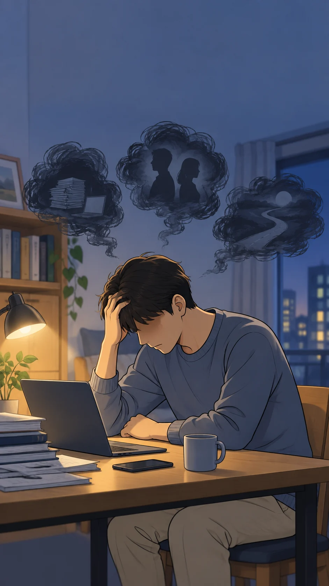
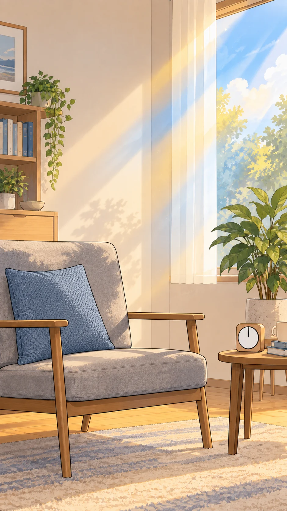
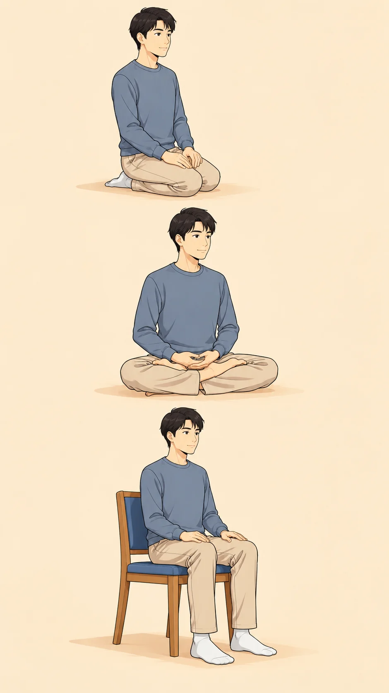
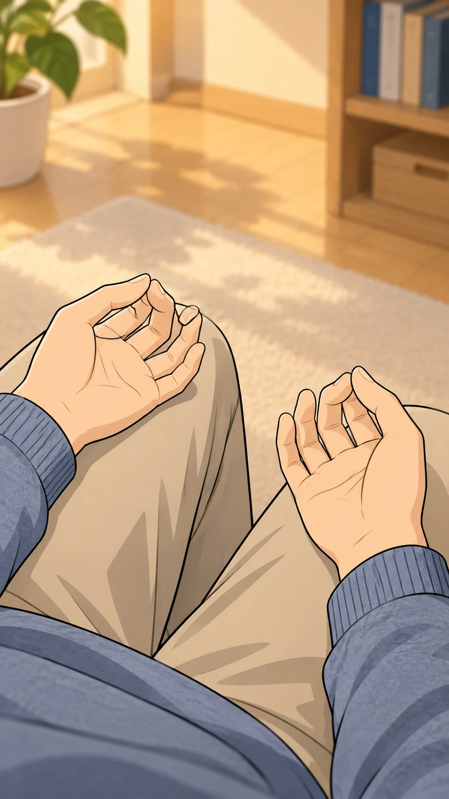
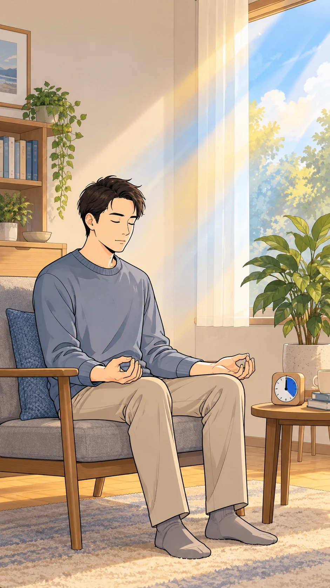
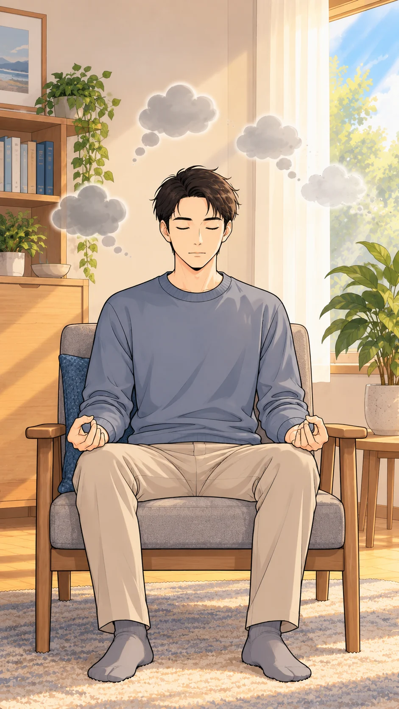
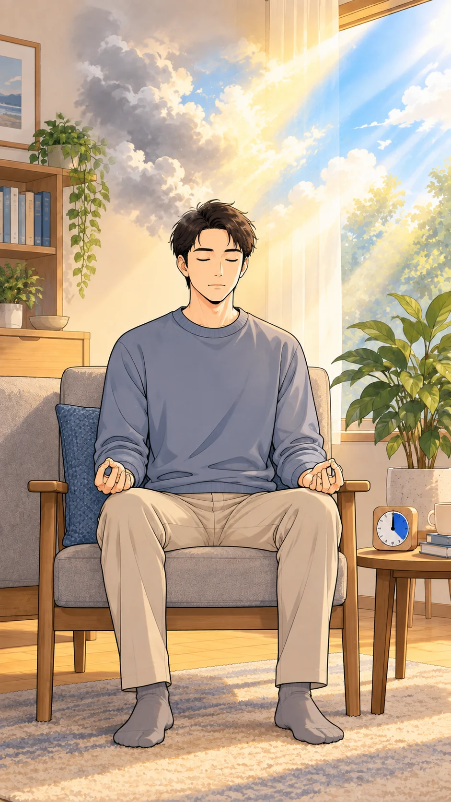
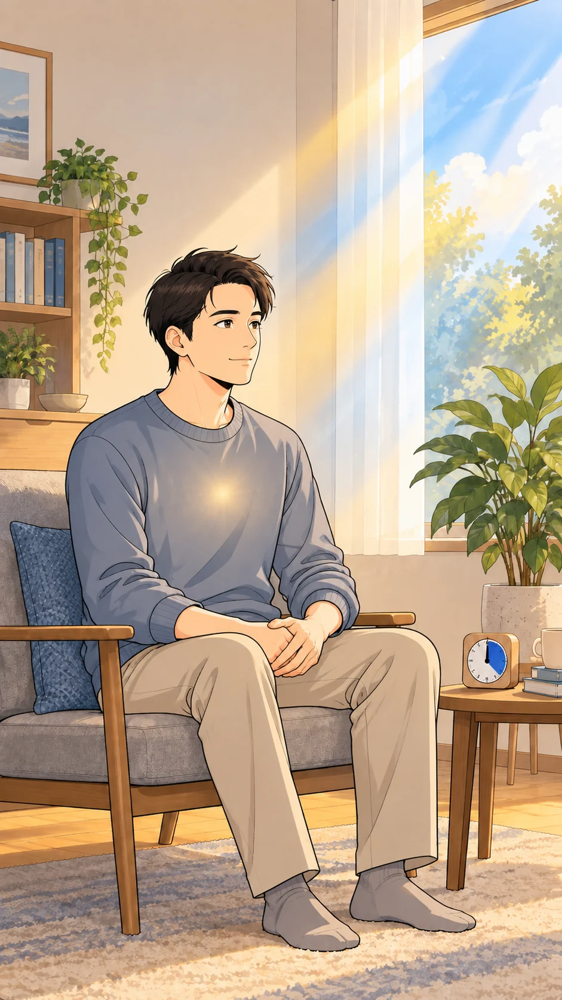

頭の中が、いっぱい。
仕事、人間関係、将来の不安……

ナレーション
現代人の頭の中は、毎日「雑念」でパンクしそうになっていませんか？
自分の本質に、帰る。
大丈夫です。
空不動先生
自分の本質（主体）に帰り、心身を静かにリセットする瞑想——
それが「統一行（とうぎょう）」です！
時間と場所を決める
まずは時間と場所を決めましょう。

20分／日
空不動先生
基本は1日20分。
または、週1〜2回、30分ずつ。
自分だけの「瞑想空間」を作ることが、習慣化のコツです。
安定する座り方で
姿勢は、安定するものを選びます。

正座結跏趺坐椅子
空不動先生
正座・結跏趺坐・固めの椅子の3つから、安定するものを選びます。
背筋を伸ばしたら、一気に肩の力を抜いてリラックス！
指先に、やさしい輪を。
両手の親指と人差し指で、綺麗な円を。

空不動先生
他の指は自然のまま、手のひらを上にして軽く膝に乗せます。
これで基本の印の完成です。
うまくやろうと、しない。
「うまく統一しよう」と気負う必要はありません。

空不動先生
守護神をお呼びし、感謝の言葉を唱えながら、
ただ身と心を、自分の本質（主体）に委ね切るのです。
雑念は、通り過ぎるもの。
雑念や、不思議な感覚が湧いてきても。

空不動先生
絶対に意味を詮索しないこと！
「ただの消えていく姿」として、一切無視して通り越します。
自明の光！
心の中で、唱えます。

自明の光！
空不動先生
心の中で「自明の光！」と唱え、浮かんできた想念を光で照らし、浄化するイメージを持ちます。
あとの処理は、守護神にお任せすれば良いのです。
静けさの、その先へ。
たった20分。

ナレーション
潜在意識が清められ、命のエネルギーがフル充電される至福のひととき。
今日から、自分に帰る時間を。
自分を愛し、命の故郷へ。
空不動先生
自分を愛し、命の故郷（超越意識）へと還る「統一行」。
あなたも今日から、この安心と平穏を体験してみませんか？